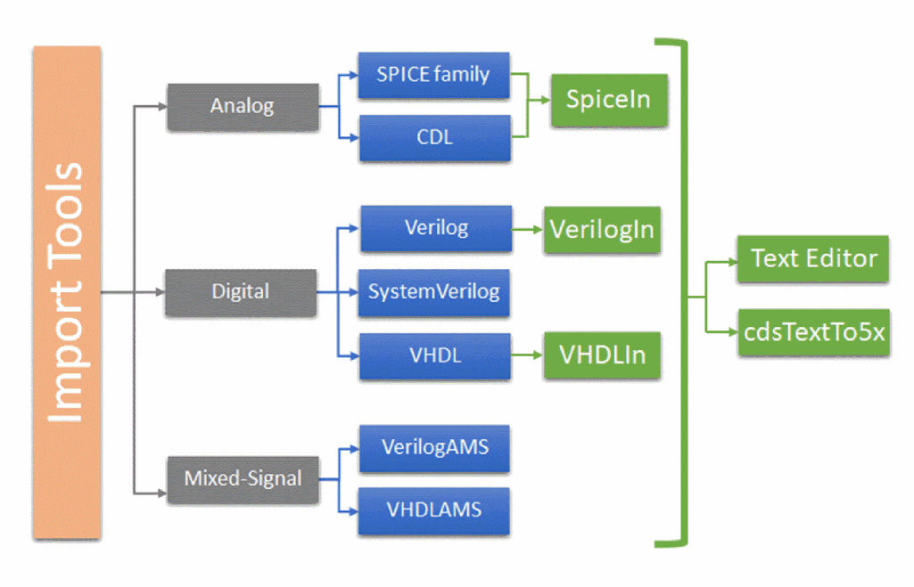

1
Import Tools in the Virtuoso Design Environment
Import tools in the Virtuoso Design Environment let you import analog, digital, and mixed-signal netlists into the Virtuoso Design Environment. Importing a file includes converting the information it contains to a syntax that Virtuoso can understand.
Import tools can be classified on the basis of the language used to describe the design information:
-
Analog import tools – spiceIn, Virtuoso Text Editor, cdsTextTo5x
Used for designs written in languages such as SPICE, HSPICE, PSPICE, SPECTRE, and CDL -
Digital import tools – Verilog In, VHDL In, Virtuoso Text Editor, cdsTextTo5x
Used for designs written in languages such as Verilog, SystemVerilog, and VHDL. Here, Verilog In and VHDL In are language dependent. -
Mixed-Signal import tools – Text Editor, cdsTextTo5x
Used for designs written in languages such as Verilog AMS and VHDL AMS.
All import tools generate the following elements:
-
The 5x library structure – The library, cell, and view structure is generated to import the netlist file of the design, for example
verilog.v, into the Virtuoso Design Environment environment without the need to launch Virtuoso. - A symbol view of the specified cell – The symbol representation of the cell interface can then be instantiated as a place master in a schematic.
-
A shadow database of netlist files – These tools save OpenAccess connectivity information in the
netlist.oafile. Shadow-based netlisters need thenetlist.oafile to ensure that the same connectivity information exists in the place master and the switch master. -
A schematic view – These tools generate a schematic view of the design.
- A blackbox of a cell – These tools optionally allow importing only the interface information of a design cell while ignoring the instance information. This improves the temporal performance when you import large designs.
- A single cell – These tools allow importing a specific cell or set of cells from a netlist file. This functionality eliminates the need to import the complete netlist.
The following illustration shows the import tools hierarchy with the Virtuoso import tools shown in green:

The import tools and the languages that they support are as follows:
- Analog design files which are written using SPICE, PSPICE, SPECTRE, DSPF, or CDL are imported into the DFII environment by using the spiceIn, Text Editor, or cdsTextTo5x tools.
- Digital design files which are written using Verilog and VHDL, are imported using Verilog In and VHDL In, respectively, because these tools are language dependent. These files can also be imported using the Text Editor and cdsTextTo5x tools.
- Digital design files which are written using SystemVerilog and the mixed-signal design files written using Verilog AMS and VHDL AMS are imported using the Test Editor and cdsTextTo5x tools.
Most import tools generate schematics, symbols, and the OpenAccess database. The exception is cdsTextTo5x, which generates only symbols and the OpenAccess database.
- Verilog In for Virtuoso Design Environment User Guide and Reference
- VHDL In for Virtuoso Design Environment User Guide and Reference
- Connectivity to Schematic User Guide
- HDL Import and Netlist-to-Schematic Conversion SKILL Reference
- Virtuoso Text Editor User Guide
Return to top